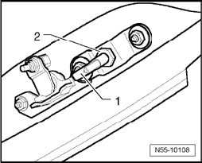

Adjusting Latch Bracket
Adjusting Latch Bracket
- The hinged tailgate window must be properly adjusted.

- Remove cover for wiper motor
- By loosening the nut -2-, the striker pin -1- can be adjusted to the hinged tailgate window lock.
The hinged tailgate window is correctly adjusted when the striker pin engages the hinged tailgate window lock without resistance.